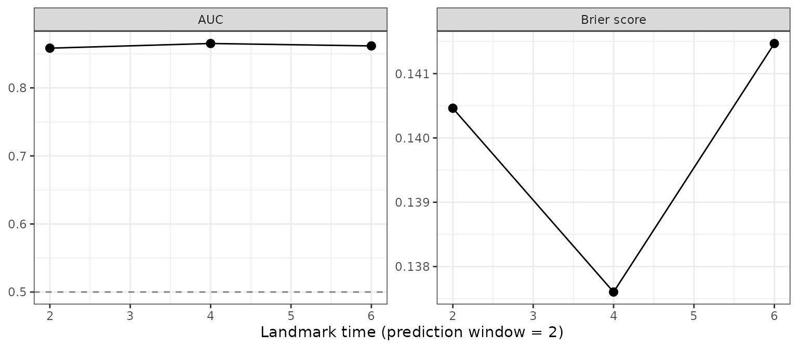
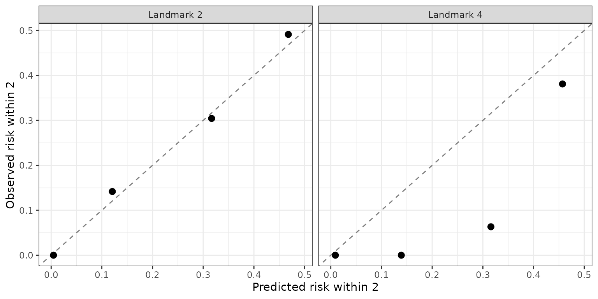

In many longitudinal studies the event is not seen when it happens. It is found at a visit: a biopsy turns positive, a scan shows progression, a cognitive test crosses a threshold. All that is known is that the event happened after the last visit at which it was absent and before the visit that detected it. The event time is interval-censored, known only to lie in an interval :
| Situation | ||
|---|---|---|
| Event detected at a visit | last negative visit | the detecting visit |
| Event already present at the first visit | 0 | first visit |
| No event by the last visit (right-censored) | last visit | NA |
Treating the detecting visit or the midpoint of the interval as the event time is common, but it biases the backward joint model in a particular way. The longitudinal sub-model has the event time as a covariate, so an error in is measurement error in a covariate, and its coefficients are attenuated. This article shows the experimental interval-censoring support in BJM:
-
survivalSub()fits the survival sub-model toSurv(L, R, type = "interval2"); -
fitIntervalBJM()fits the longitudinal sub-model by imputing ; -
predictRisk()andpredictLongitudinal()account for the event being possibly already present, but not yet detected, at the prediction time; -
performancePlot()andcalibrationPlot()evaluate the predictions.
Example data
The pbc3 data have exact event times, so this article
simulates a study whose truth is known. Subjects are seen every 1 to 3
years, when a biomarker y is measured and the event is
checked for. The event time follows a proportional hazards model with
covariate x, and the biomarker depends on the (unknown)
event time T with coefficient −0.2.
simulate_study <- function(n, seed) {
set.seed(seed)
x <- rnorm(n)
T <- (-log(runif(n)) / (0.05 * exp(0.5 * x)))^(1 / 1.5)
# true_T is kept only to check the methods below; a real study does not have it
surv <- data.frame(id = seq_len(n), x = x, L = NA_real_, R = NA_real_, true_T = T)
long <- vector("list", n)
for (i in seq_len(n)) {
visits <- c(0, cumsum(runif(20, 1, 3)))
visits <- visits[visits < runif(1, 4, 15)]
if (T[i] > max(visits)) { # not detected: right-censored
surv$L[i] <- max(visits)
seen <- visits
} else { # detected at the next visit
k <- findInterval(T[i], visits)
surv$L[i] <- visits[k]
surv$R[i] <- visits[k + 1]
seen <- visits[visits <= T[i]]
}
b <- rnorm(2, 0, c(0.5, 0.1))
long[[i]] <- data.frame(id = i, year = seen, x = x[i],
y = 1 + 0.3 * seen - 0.2 * T[i] + 0.4 * x[i] +
b[1] + b[2] * seen + rnorm(length(seen), 0, 0.3))
}
list(surv = surv, long = do.call(rbind, long))
}
study <- simulate_study(300, seed = 1)
head(study$surv)
#> id x L R true_T
#> 1 1 -0.6264538 2.663798 5.197483 3.1615219
#> 2 2 0.1836433 0.000000 1.856694 1.2203314
#> 3 3 -0.8356286 4.142883 NA 15.0069579
#> 4 4 1.5952808 1.656316 4.656177 1.8876750
#> 5 5 0.3295078 0.000000 2.753717 0.5590590
#> 6 6 -0.8204684 0.000000 2.003273 0.8397886
head(study$long)
#> id year x y
#> 1 1 0.000000 -0.6264538 1.3414335
#> 2 1 2.663798 -0.6264538 1.2273575
#> 3 2 0.000000 0.1836433 0.2401363
#> 4 3 0.000000 -0.8356286 -2.4914256
#> 5 3 2.767505 -0.8356286 -1.2055779
#> 6 3 4.142883 -0.8356286 -0.6163481The survival sub-model
Surv(L, R, type = "interval2") makes
survivalSub() fit a proportional hazards model to the
intervals by maximum likelihood, in place of a Cox model. The baseline
hazard is a smooth Royston–Parmar spline by default
(baseline = "spline", df = 3);
baseline = "piecewise" gives a piecewise-constant hazard.
Because the exact event time is unknown, it is not part of the formula:
event_time names the column that the longitudinal sub-model
will use for it.
survival_fit <- survivalSub(study$surv, Surv(L, R, type = "interval2") ~ x, NULL,
event_time = "Tev")
survival_fit
#>
#> Call:
#> survivalSub(form_marginal_surv = Surv(L, R, type = "interval2") ~ x,
#> event_time = "Tev")
#>
#> Data Descriptives:
#> Number of subjects : 300
#> Interval-censored : 186
#> Exactly observed : 0
#> Right-censored : 114
#> Events before first visit : 47 (25% of events)
#>
#> =================================================================
#> Marginal Survival Sub-model [PH, spline (df = 3) baseline, interval-censored]
#> -----------------------------------------------------------------
#> Formula: Surv(L, R, type = "interval2") ~ x
#>
#> Coef exp(Coef) SE z p-value
#> x 0.41025 1.50720 0.07591 5.405 6.49e-08 ***
#> ---
#> Signif. codes: 0 '***' 0.001 '**' 0.01 '*' 0.05 '.' 0.1 ' ' 1
#>
#> Log-likelihood = -414.86
#> =================================================================The printout reports how many events fell before the first visit. Before the earliest visit there are no interval endpoints, so the baseline hazard there is extrapolated rather than estimated. When such events are a large share of all events (in simulations, about a third or more), results depend noticeably on that extrapolation.
A strata() term gives each stratum its own baseline
hazard, as in a stratified Cox model.
Fitting the longitudinal sub-model:
fitIntervalBJM()
With right-censored data, the longitudinal sub-model is fit to the
subjects whose event was observed, using their event times. With
interval censoring no event time is known. fitIntervalBJM()
fills it in by stochastic EM and multiple imputation:
- fit the survival sub-model to the intervals;
- start every event time at its interval midpoint and fit
longitudinalSub(); - draw each subject’s
from
on their interval, and refit, for
n_burniniterations; - keep iterating, saving every
n_thin-th draw (5 by default, so the saved draws are less correlated) and its fit, untiln_imputationsare saved.
Step 3 uses the backward model’s own structure: on a grid of event times is exactly what dynamic prediction already computes.
fit <- fitIntervalBJM(
study$surv, study$long,
form_marginal_surv = Surv(L, R, type = "interval2") ~ x,
event_time = "Tev",
long_sub_fixed = y ~ year + Tev + x,
long_sub_random = ~ year | id,
time_variable = "year",
n_burnin = 5, n_imputations = 3, seed = 1)
fit$pooled$pooled[[1]][, c("estimate", "std_error", "fmi")]
#> estimate std_error fmi
#> (Intercept) 0.9935203 0.07897851 0.084685775
#> year 0.2945415 0.01180577 0.007636849
#> Tev -0.2044184 0.01508121 0.092819843
#> x 0.3950136 0.04226324 0.038571666fit$pooled combines the imputations with Rubin’s rules
(poolLongitudinalSub()); fmi is the fraction
of missing information, here the information lost by not knowing
.
fit$trace holds every iteration’s estimates, to check that
the chain has settled:
plot(fit$trace[, "Tev"], type = "b", xlab = "Iteration",
ylab = "Coefficient of Tev", main = "Stochastic EM trace")
abline(v = 5.5, lty = 2)For comparison, the midpoint fit and the fit with the true event times, which a real study would not have:
events <- study$surv[!is.na(study$surv$R), ]
with_T <- function(T_values) {
d <- study$long[study$long$id %in% events$id, ]
d$Tev <- T_values[match(d$id, events$id)]
nlme::fixef(longitudinalSub(list(d), y ~ year + Tev + x, ~ year | id)$lfit[[1]])
}
round(rbind(truth = c(1, 0.3, -0.2, 0.4),
`true event times` = with_T(events$true_T),
midpoint = with_T((events$L + events$R) / 2),
fitIntervalBJM = fit$pooled$pooled[[1]]$estimate), 3)
#> (Intercept) year Tev x
#> truth 1.000 0.300 -0.200 0.400
#> true event times 0.980 0.295 -0.201 0.375
#> midpoint 0.948 0.295 -0.195 0.397
#> fitIntervalBJM 0.994 0.295 -0.204 0.395One data set says little. In simulations of this design (300
subjects, many replicates), the midpoint fit’s coefficient of
Tev was attenuated by about 4%, and
fitIntervalBJM() removed this. With visits only every 2–6
years the midpoint bias grew to about 9%, and
fitIntervalBJM() left about 1–2%.
Dynamic prediction between visits
fit$survival_fit_all and fit$long_fit_all
plug into the usual prediction functions; fit$long_fit_all
combines the imputations (the pooled fixed effects and the averaged
variances), so a prediction does not hinge on any single imputation. One
thing changes: an event is only detected at a visit, so at a prediction
time
between visits, a patient is known to be event-free only up to their
last visit
,
not up to
.
predictRisk() therefore returns
-
risk_prob_1: ; -
prob_undetected_1: , the probability that the event has already happened but has not been detected yet.
# six patients still followed at year 4 with no event detected by then
at_risk <- with(study$surv, id[(is.na(R) & L >= 4) | (!is.na(R) & R > 4)])[1:6]
history <- study$long[study$long$id %in% at_risk & study$long$year <= 4, ]
history$Tev <- NA # unknown for a patient still being followed
tapply(history$year, history$id, max) # each patient's last visit V
#> 1 3 4 7 8 10
#> 2.663798 2.767505 1.656316 2.445580 2.509715 1.657085
risk <- predictRisk(list(history), fit$long_fit_all, fit$survival_fit_all,
prediction_time = 4, horizon = 2, time_variable = "year",
survival_variable_all = NULL, survival_trans_function = NULL,
bandcount1 = 20, bandcount2 = 40)
risk
#>
#> =================================================================
#> Dynamic Prediction - Event Risk
#> -----------------------------------------------------------------
#> Competing risks : No
#> Subjects : 6
#> -----------------------------------------------------------------
#>
#> Subject Risk Prob Already, undetected
#> 1 0.2761 0.6894
#> 3 0.0013 0.0001
#> 4 0.1512 0.8291
#> 7 0.3930 0.3872
#> 8 0.3954 0.4152
#> 10 0.0237 0.0033
#>
#> Interval-censored: risks condition on being event-free at each subject's
#> last visit; 'Already, undetected' is the probability the event happened
#> between that visit and the prediction time.
#>
#> =================================================================Here the simulation’s true event times show what the model could not
see. A high Already, undetected probability goes with an
event that had in fact already happened by year 4:
round(study$surv$true_T[match(names(risk$risk_prob_1), study$surv$id)], 2)
#> [1] 3.16 15.01 1.89 6.46 5.49 13.96Predicting at a patient’s last visit
()
leaves nothing undetected and gives the usual conditioning on
.
simulateTrajectory() currently requires this, since the
event could otherwise already have happened.
Competing risks
With competing risks, the event type is taken as known once the event
is detected. Pass the event-type model to fitIntervalBJM().
It draws each
from
and refits the event-type model, which uses
,
on every draw. predictRisk() then reports both risks and
both undetected probabilities:
fit_cr <- fitIntervalBJM(
surv, long, Surv(L, R, type = "interval2") ~ x, "Tev",
long_sub_fixed = y ~ year + Tev + type + x,
long_sub_random = ~ year | id, time_variable = "year",
form_conditional_cr = type ~ Tev + x)The event type (type, 0/1) must be in both data sets, as
for right-censored competing risks.
Evaluating the predictions
performancePlot() and calibrationPlot()
take evaluation data with each subject’s interval columns (here
L and R) instead of a survival time and
status. A subject whose interval straddles the start or end of the
prediction window has an uncertain status. Following Yang et al. (2026),
the default (interval_method = "model") counts such a
subject as a case or a control with the probability the fitted model
gives their event time within their own interval.
evaluation <- merge(study$long, study$surv[, c("id", "L", "R")], by = "id")
performancePlot(evaluation, fit$long_fit_all, fit$survival_fit_all,
prediction_time = c(2, 4, 6), horizon = 2, time_variable = "year",
survival_variable_all = NULL, survival_trans_function = NULL,
bandcount1 = 20, bandcount2 = 40)
interval_method = "ipcw" uses only the subjects whose
status is certain, reweighted, and does not rely on the model. In
simulations with visits every 1–3 years, though, only about 5 of 60
cases had a certain status. The IPCW Brier score came out at about 0.03
instead of the true 0.13, and the IPCW AUC was about three times as
variable. The model-based measures stayed within about 0.003 of the
truth, even with a misspecified survival sub-model. Because the model
grades itself, a miscalibrated model’s Brier score comes out slightly
too good, so check calibration separately with
calibrationPlot(), which does not use the model.
In calibrationPlot(), each risk group’s observed risk is
estimated without the model. A Turnbull-type nonparametric estimate is
computed from the intervals and left-truncated at each subject’s last
visit, so it targets the same quantity predictRisk()
predicts:
calibrationPlot(evaluation, fit$long_fit_all, fit$survival_fit_all,
prediction_time = c(2, 4), horizon = 2, time_variable = "year",
survival_variable_all = NULL, survival_trans_function = NULL,
n_groups = 4, bandcount1 = 20, bandcount2 = 40)
In simulations with visits every 1–3 years and a 2-year window, this observed risk was unbiased for every risk group. It also exposed a deliberately miscalibrated model, where an observed risk computed from the model’s own posterior followed the miscalibrated predictions instead. But with event times known only up to their intervals it is noisy: with groups of about 60 subjects it was off by 0.08–0.16 on average, so a group can sit well off the diagonal by chance, as at landmark 4 here. It also needs the prediction window to be at least about as long as the gaps between visits. With visits every 2–6 years and a 2-year window, the window usually lies inside a subject’s interval, where the timing is not identified, and the observed risk of the higher-risk groups came out up to 0.27 too high. As everywhere in BJM, evaluating on the fitting data gives an optimistic (apparent) performance. Use held-out data when you can.
Assumptions and limitations
- Detection at visits. The event is detected at the first visit after it happens, and the visit schedule does not depend on the patient’s risk beyond the observed data (non-informative inspection).
-
Biomarker visits are inspection visits. The last
visit
used in prediction is the last biomarker measurement up to the
prediction time. When fitting,
fitIntervalBJM()uses a subject’s measurements up to the last visit without the event () only: the one at the detecting visit is taken after the event, which the backward model does not describe, and is left out (with a message). - Beyond the data. Past the last interval endpoint, the spline baseline continues as a Weibull with the shape of a Weibull fit to all the data, and the piecewise baseline with its last piece’s hazard.
-
Before the first visit. The baseline hazard is
extrapolated there, so the share of events before the first visit
(reported by
print()) indicates how much the results lean on it. - Stochastic EM. Each iteration uses one draw of the event times. In an extreme design (visits every 2–6 years), this left a bias of about 2% of the effect. The pooled standard errors treat the model parameters as fixed, so they can be slightly too small.
- Experimental. The interface may change. The simulations behind the numbers in this article are kept in a separate folder, next to the package source.
References
- Turnbull, B. W. (1976). The empirical distribution function with arbitrarily grouped, censored and truncated data. Journal of the Royal Statistical Society, Series B, 38, 290–295.
- Hudgens, M. G., Satten, G. A., & Longini, I. M. (2001). Nonparametric maximum likelihood estimation for competing risks survival data subject to interval censoring and truncation. Biometrics, 57, 74–80.
- Royston, P., & Parmar, M. K. B. (2002). Flexible parametric proportional-hazards and proportional-odds models for censored survival data. Statistics in Medicine, 21, 2175–2197.
- Yang, Z., Rizopoulos, D., Newcomb, L. F., & Erler, N. S. (2026). Time-dependent predictive accuracy metrics in the context of interval censoring and competing risks. Biometrical Journal, 68, e70108.